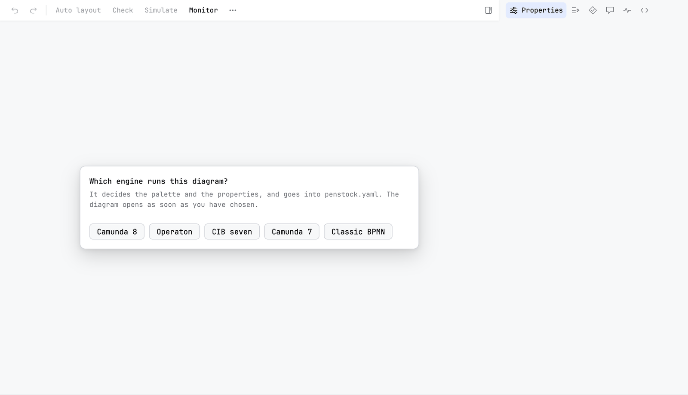

Guide / Project setup
Engines
An engine is the server that runs your process. Penstock builds a different editor for each one, and this page says what changes.
The engines Penstock knows
| Engine | engine: value | Namespace in the XML | Address of the REST API |
|---|---|---|---|
| Classic BPMN 2.0 | classic | None. Plain BPMN only. | No deployment |
| Camunda 7 | camunda-7 | camunda, bound to http://camunda.org/schema/1.0/bpmn | Ends in /engine-rest |
| Camunda 8 | camunda-8 | zeebe, bound to http://camunda.org/schema/zeebe/1.0 | The REST API of the cluster, for example http://localhost:8080/v2 |
| Operaton | operaton | operaton, bound to http://operaton.org/schema/1.0/bpmn | Ends in /engine-rest |
| CIB seven | cib-seven | camunda, the same as Camunda 7 | Ends in /engine-rest |
Operaton and CIB seven are open-source continuations of Camunda 7. Camunda ended community support for Camunda 7 in October 2025. Penstock calls Camunda 7, Operaton and CIB seven the Camunda 7 family. They share the same editor, the same REST API shape and the same features. The differences are the ones in the table above and in Java packages, listed below.
Choose the engine

You usually do not have to. Penstock finds out in this order:
enginein the nearestpenstock.yaml. The file nearest the diagram wins, so a folder can have its own engine.- The diagram itself: the execution platform the Camunda Modeler recorded, or the
zeebe:,operaton:orcamunda:attributes it already has. - If the diagram is empty and says nothing, one line appears above the canvas: Which engine runs this diagram? Press Camunda 8, Operaton, CIB seven, Camunda 7 or Classic BPMN. The answer goes into
penstock.yaml, created in the project root if there is none, and the line does not come back.
Changing the engine takes effect when the diagram editor is reloaded, because the editor is built for it. penstock init --engine camunda-8|camunda-7|operaton|cib-seven|classic says it outright, and plain penstock init guesses the engine from your diagrams. If it finds several, it prefers Camunda 8, then Operaton, CIB seven, Camunda 7 and Classic. If the command line finds no engine at all, it treats a deployment as Camunda 7.
The engine is set per folder, not per file: a penstock.yaml that sets engine applies to every diagram under its folder. A project with Camunda 7 and Camunda 8 diagrams needs nothing special, give each folder its own file. Code links keep the two apart: a Camunda 8 job type finds its job worker and never an external task subscription of the same name.
It is called Classic BPMN everywhere in the interface. The penstock.yaml value stays engine: classic.
What each engine builds
Classic BPMN 2.0
The plain bpmn-js editor with the standard properties panel. No Camunda extension is registered, so this profile cannot write camunda: or zeebe: attributes. It has Inputs and Outputs written the BPMN way, and the colour picker and the grid with snapping that the other profiles have. See The properties panel. There is no Deploy button, no Scenarios, no templates.
Camunda 7
The Camunda Platform editor. The panel gains the execution groups: Script, Condition, Execution listeners, Task listeners, Inputs and Outputs, and more. Penstock adds element template support and a code editor for scripts, which can open in the code editor of your tool. See Scripts in their own tab. scriptType in penstock.yaml sets the default script language.
Camunda 8
The Camunda Cloud editor, with the Zeebe properties, FEEL help and element templates. It can create an element from a template or from the full element list. The connector template browser, Templates… in the More menu, is only here.
Operaton
The Camunda 7 editor, with a mapping so that the panel reads and writes operaton: attributes where Camunda 7 would use camunda:. If a diagram in an Operaton project still uses the Camunda 7 namespace, the diagram check shows a finding Wrong engine namespace with a Fix button. It opens a dialog called Convert Namespace. Press Convert to rewrite all camunda: attributes to operaton:. Operaton also reads camunda: in its 1.x line, so this is a tidy-up, not always a must.
CIB seven
The Camunda 7 editor, unchanged. CIB seven uses the same camunda: namespace as Camunda 7. The difference is in what Penstock writes for you: the Java packages of a generated JUnit test and the engine's own test configuration file. The decision editor's properties panel gives a decision its version tag and its history time to live, as Camunda 7 does.
What else depends on the engine
| Classic | Camunda 7 | Camunda 8 | Operaton | CIB seven | |
|---|---|---|---|---|---|
| Deploy, Scenarios | No | Yes | Yes | Yes | Yes |
| Migrate to Camunda 8 | No | Yes | No | Yes | Yes |
| Connector browser | No | No | Yes | No | No |
| Transaction boundaries | No | Yes | No | Yes | Yes |
| Element templates | No | Yes | Yes | Yes | Yes |
| Script editor tab | No | Yes | No | Yes | Yes |
| Java package for code links and tests | - | org.camunda | io.camunda | org.operaton | org.cibseven |
| Test config file in generated tests | - | camunda.cfg.xml | none | operaton.cfg.xml | cibseven.cfg.xml |
The check, bpmnlint, auto layout, token simulation, task resizing and export work for every engine. Camunda 7, Operaton and CIB seven all answer on the same engine-rest path, so one deployment.url covers the family; Camunda 8 has its own REST address. See Deployment.
What reaches the XML
A service task configured for Camunda 7 carries attributes like camunda:asyncBefore. The same task for Camunda 8 carries zeebe:taskDefinition or zeebe:ioMapping. An element made from a template records where it came from: camunda:modelerTemplate or zeebe:modelerTemplate.
Nothing rewrites a diagram when it opens. If you switch a project from Camunda 7 to Classic, the camunda: content stays in the file. The editor has no panel for it any more.
What you see
- The toolbar and the properties panel match the engine. Deploy is there for Camunda 7, Camunda 8, Operaton and CIB seven, and not for Classic.
penstock doctorprintsengine camunda-8(or the one you use).
Common problems
- I chose the wrong engine in the question.
- Edit
engineinpenstock.yamland reload the diagram editor. - The panel shows Camunda 7 groups but my engine is Camunda 8.
- The engine comes from the nearest
penstock.yaml. A file in a subfolder may say something else.penstock doctorprints the engine that applies. - Deploy says to choose an engine.
- The message reads Choose Camunda 7, Camunda 8, Operaton or CIB seven as the engine in penstock.yaml to deploy. Set
engine. - I use Operaton but my tool treats my diagram as Camunda 7.
- Set
engine: operaton. Without it, Penstock reads the diagram: a diagram withoperaton:attributes is Operaton, but one with onlycamunda:attributes is Camunda 7.